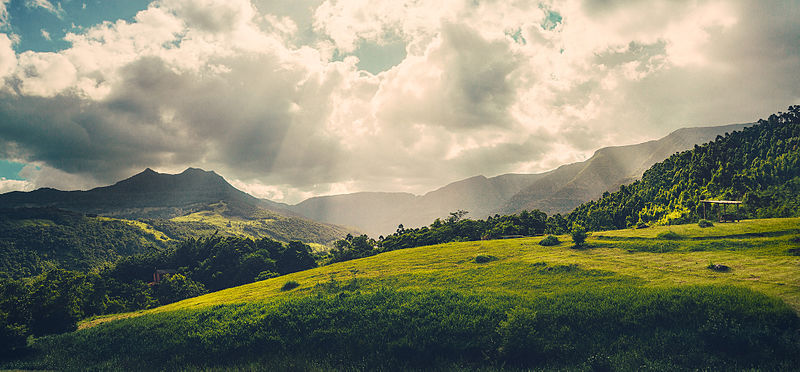

DESFRUTE PRAIA GRANDE (SC)
GASTANDO POUCO
CanyON
Chega de ser roubado por parasitas, a CanyON é um site sem fins lucrativos que lhe ajuda a elaborar o melhor roteiro de viagem.
O que fazer em Praia Grande (SC)
Viajar de balão, ir a balneários, rios, cachoeiras, cavalgadas, trilhas, quadriciclo, canionismo, rapel, sky bike, tirolesa, balanço infinito, caiaque,
A maioria das empresas de turismo oferece boas recompensas por recomendações de voos, por isso é necessário uma pesquisa cautelosa. Existe bastante concorrência, e você com certeza conseguirá um preço melhor buscando por conta própria.